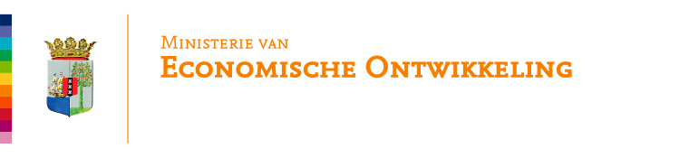

Vergunning
Heeft de standplaats een vergunning?

Standplaatsen, inspecties en beleid in één rustig overzicht.
Gebruik uw MEO ArcGIS-account voor actuele gegevens. De demo toont een momentopname van 2 november 2026.
Economische Controle · Standplaatsen
Geen standplaatsen voor deze filters.
Heeft de standplaats een vergunning?
Wordt de standplaats na sluiting verwijderd?
Spreiding over de zones
Aantal standplaatsen per type, met statusverdeling
Uitgevoerde inspecties over de afgelopen 12 maanden
Geconstateerd tijdens inspecties
Zonder vergunning aangetroffen
Uitgevoerde controles